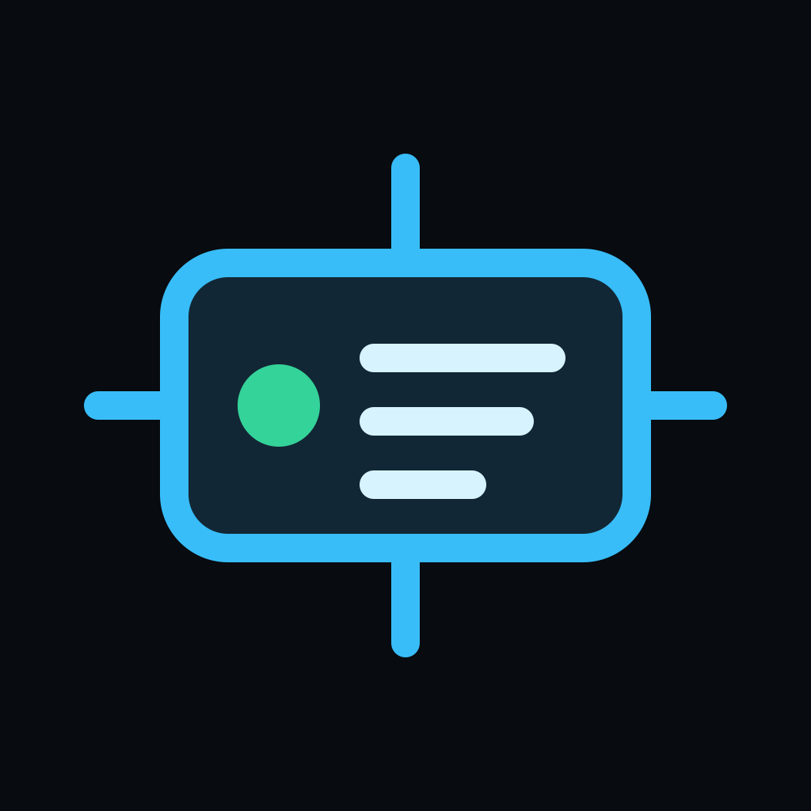

See the whole fleet
Live topology, hardware, storage, network, temperature, availability, maintenance state, and activity in one operational view.

OML / 001 · Public release
Orchestra turns the computers you already own into one private operating layer for Codex sessions, jobs, files, telemetry, power, and approvals.
01A Live fleet topology and telemetry shown with privacy-safe synthetic data.
Development files sit on a laptop. Training belongs on a GPU workstation. Archives live on a NAS. Services run on an always-on machine. The usual answer is a growing collection of SSH aliases, dashboards, scripts, and mental bookkeeping.
Orchestra replaces that collection with a shared control plane. Core knows the fleet and coordinates work. Agents keep execution, credentials, files, and compute on their own machines. Clients provide one coherent interface from wherever you are.
Live topology, hardware, storage, network, temperature, availability, maintenance state, and activity in one operational view.
Choose a device directly or let availability, load, locality, role, power, cost, and temperature inform placement.
Run a real Codex app-server on the selected machine so its workspace, tools, skills, authentication, and compute stay local.
Use the desktop client, responsive web interface, native iOS app, or macOS menu bar while Core maintains shared state.
Structured permissions, scoped tokens, device-bound credentials, audit records, and host opt-in preserve the safety boundaries.
Coordinate jobs, pipelines, files, artifacts, telemetry, diagnostics, previews, and guarded power controls across devices.
The architecture is deliberately asymmetric. Orchestra Core owns fleet identity, routing, projects, sessions, approvals, and live state. Device Agents own local execution, credentials, files, previews, telemetry, and hardware access.
Tailscale is the recommended private network layer. Orchestra adds its own authentication, authorization, policy, and audit boundaries above the network.
Source available
Evaluation, education, personal projects, and qualifying nonprofit use are free. Business use requires prior written permission and agreed terms from One Man Labs.
Get Orchestra on GitHub ↗